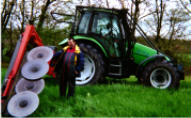
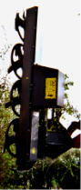
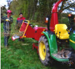
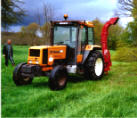
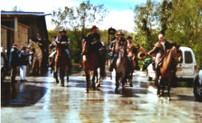

La Ferme de La Godinière
27410
Le Noyer en Ouche
dernière mise à jour de cette page : 25.10.2009
Samedi
17 Avril 2004 de 14h à 18h
Dimanche 18 Avril 2004 de 10h à 18h
Journées Portes Ouvertes du Réseau " BIENVENUE A LA FERME "
Chambre d'Agriculture de l'Eure Tel : 02.32.78.80.50
www.normandiealaferme.com
www.agri-eure.com
www.normandiealaferme.com
Cette
année, à la Ferme de la Godinière :
LA
HAIE DANS L'ENVIRONNEMENT
Rôle - Mise en place - Choix des essences - Entretien
DEMONSTRATION DE TAILLE et BROYAGE de résidus.
l'affiche...cliquez
La fête est finie. Tout s'est déroulé pour le mieux. Tout d'abord MERCI aux participants qui ont donné un peu de leur temps pour faire une animation qui a retenu l'attention d'un Public de Visiteurs habituels ou occasionnels, qui ont parfois fait de la route pour venir nous rendre une visite. La journée de Samedi ayant été assez clémente, celle de Dimanche fut plutôt arrosée et pas chaude du tout.
Merci également à la presse et France Bleu Haute Normandie qui ont annoncé l'évènement Portes Ouvertes de Bienvenue à la Ferme et qui ont relayé l'animation prévue à La Godinière.
Nous avons pu voir le travail d'élagage avec différentes machines ainsi que le broyage des résidus de taille.
Merci donc à
|
 |
E T A. Christian AUGER Elagage (Scie, Fléaux, Epareuse) Entretien Broyage Chemins verts et Forestiers 27270 LA ROUSSIERE Tél : 02.32.44.68.16 |
 |
|
Elagueuse KUHN HE
5560 P sur Tracteur Deutz |
||
|
 |
Jean-Luc
ZOUTARD Entrepreneur Paysagiste Parcs et Jardins 8, Route de Sainte Marguerite - 27190 LE FIDELAIRE Tél : 02.32.30.76.39 |
| La Communauté de Communes de Beaumesnil qui a aimablement mis en démonstration le Broyeur de branches et surtout aux employés qui sont venus le week-end donner gracieusement un peu de leur temps. |
 |
Espace
Emeraude RUAUX
Location matériels
14100 MAROLLES RN13 Tél : 02.31.48.32.36 - M. POTIER
Dominique
61 L'AIGLE SDM Tél : 02.33.24.52.32 - M. COLLET Espace
motoculture
qui a présenté :
- Broyeur à branches Marque LINDANA AS
Type 310 VT Moteur 16 CV bycylindres
FSI - 72610 ARCONNAY Tél
02.33.31.84.65 Fax 02.33.29.75.81
- Elagueuse COUP'ECO GALAX 4000 Type
TH 098440
COUP'ECO SARL ZI
du Chail 17800 PONS Tel 05.46.96.25.50
Fax 05.46.94.64.72
A Guillaume et à l
a Fédération Départementale des Chasseurs de l'Eure pour la fourniture de documents ou les travaux de recherche.L'intérêt de telles journées n'est plus à démontrer, pour preuve le nombre de visiteurs de tous âges qui se sont déplacés, soit pour voir l'animation proposée ou selon un circuit établi soit géographiquement ou par pôle d'intérêt ; ( dans le département de l'Eure, ce sont environ 6200 visiteurs qui se sont déplacés sur les 22 exploitations pour l'opération Portes Ouvertes 2004 du réseau Bienvenue à la Ferme). Si la plupart d'entre eux sont venus en voiture, il faut donner un coup de chapeau particulièrement à ceux qui sont venus à vélo alliant randonnée, découverte du Canton de Beaumesnil et des produits du terroir afin de passer une bonne journée, même sous la pluie, la grêle et les bourrasques.
|  | Quelle ne fut pas notre surprise de voir également une troupe de cavaliers et cavalières - quel courage et quelle passion !!! - nous rendre visite et nous demander si ils pouvaient pique-niquer..., bien sûr ce n'est pas l'espace qui manque et c'est avec plaisir que nous les avons accueillis. Après avoir mis leurs montures à l'attache afin qu'elles prennent également un peu de repos, nos joyeux visiteurs n'ont eu aucun dédain pour savourer nos produits et en particulier Le Godinier qui leur a réchauffé un peu le cœur avant de sortir de leurs sacs les menus de circonstance lors d'une telle sortie : baguette, saucisson, pâté, etc... etc.. tout cela arrosé d'un excellent Cidre Fermier. |
| Le festin avait pour cadre la cave de stockage de La Godinière... une première pour eux, et une fois n'est pas coutume, à l'abri, vu le temps, c'était le paradis... Un quatre étoiles!!! Une fois restaurés et pour s'assurer d'une bonne digestion avec en conclusion un petit Calvados (avec modération, bien sûr), ils sont repartis non sans avoir fait une photo souvenir en se promettant de revenir un jour prochain... Bonne Route et A Bientôt !!! | |
A ce propos, nous rappelons que nous accueillons aimablement tous groupes de randonneurs, quelque soit le type, pour une pose ou un pique-nique, SUR RESERVATION - PREVENIR QUELQUES JOURS A L'AVANCE - abri en cas de mauvais temps, et gratuitement bien sûr... et passer une nuit sur place peut être envisageable si vous êtes campeurs, RENSEIGNEZ VOUS
Retour Accueil : cliquez
ou page précédente
Ecrivez nous pour donner votre impression et votre suggestion, merci.